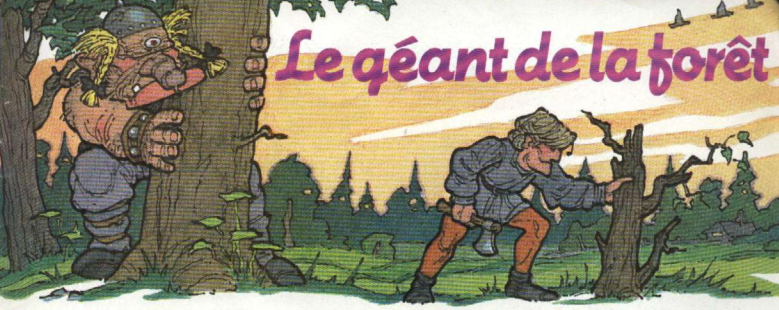
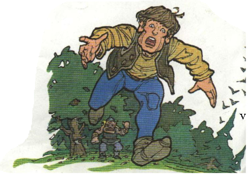
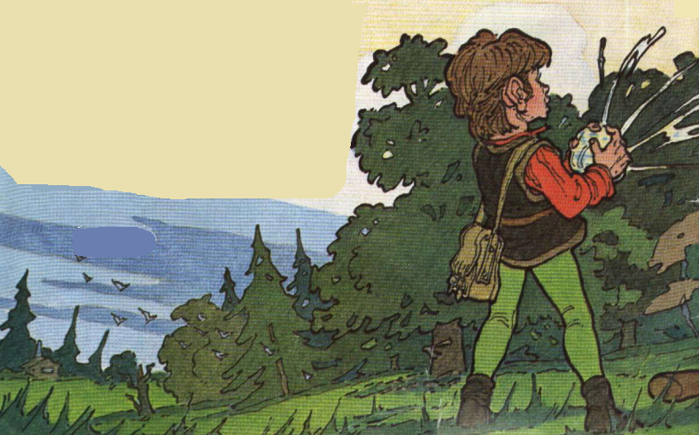
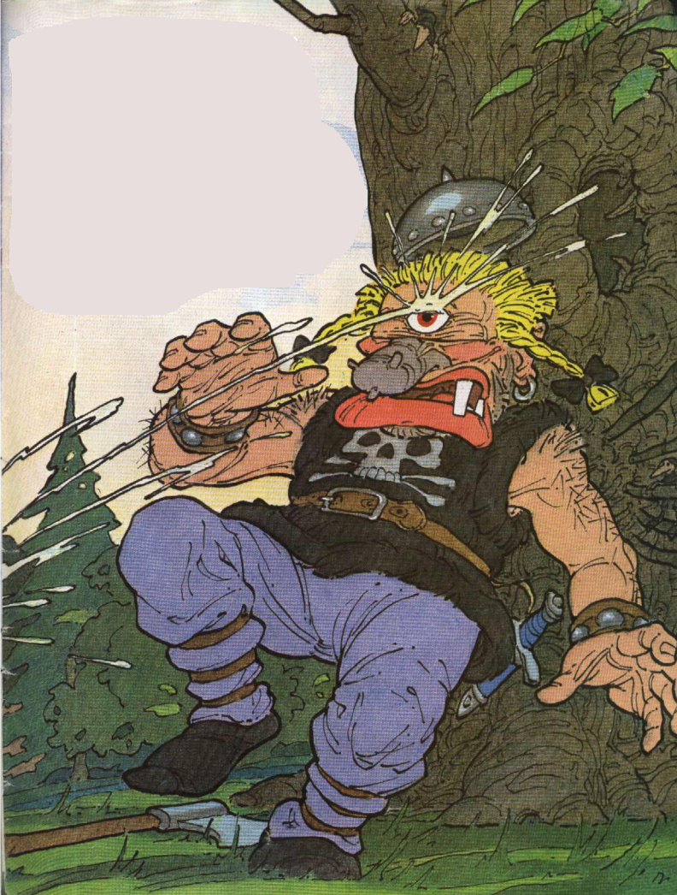

Le géant de la forêt
II était une fois une vieille femme qui vivait, avec ses trois fils, dans une petite maison à l’orée d’une profonde forêt.
Cette année-là, comme l’hiver s’annonçait rude et qu’elle avait besoin de bûches pour sa cheminée, la vieille demanda à l’aîné de ses fils d’aller abattre un arbre dans la forêt.
« S’il fait froid, nous n’aurons qu’à tous aller au lit ! Pas besoin de faire du feu ! grommela le garçon. - Ne sois donc pas si paresseux ! gronda la mère. Nous ne pouvons tout de même pas rester au lit tout l’hiver ! Tu es le plus fort de mes fils, alors va et trouve » du bois !
Le gaillard n’aimait pas se fatiguer à la tâche. Il finit pourtant par accepter, et se mit en route pour la forêt, emportant avec lui la hache la plus légère qu’il ait pu trouver . Il s’arrêta bientôt devant un arbre tout pourri, dont il espérait qu’il ne serait pas trop dur à abattre, et il leva sa hache pour cogner. Mais, à peine eut il fait une première entaille, qu’il sentit un coup bizarre sur son épaule. Il se retourna devant lui, se tenait l’être le plus affreux, le plus répugnant, le plus effrayant qu’on puisse imaginer. Un seul œil, rouge et luisant, était placé juste au milieu de son front, et son nez était noueux et biscornu comme la racine d’un vieux chêne.
« Hé! Toi, Superman! lança le géant. Si tu touches à un seul des arbres de ma forêt, je te brise en cinquante »morceaux!
À ces mots, le garçon jeta sa hache, prit ses jambes à son cou et s’en fut raconter son horrible rencontre.
« Voyez vous ça! Un vieux géant idiot lui fait peur, ricana son cadet. Et bien, moi, j’irai à ta place ! » Le lendemain matin, donc, armé d’une grosse hache, le second fils s’en fut dans la forêt. Là, il choisit un bel arbre solide, capable, à lui tout seul, de donner assez de bûches pour tout l’hiver.
Han ! Han ! Hh. .. aan ! Le bruit de la hache retentissait jusque dans les profondeurs de la forêt. Alors... le géant apparut pour la deuxième fois:
« Hé ! Toi, le costaud! Lève cette hache encore une seule fois et je te brise en cent morceaux !
— Ne ne cc-croyez pas que que je-je sois eff f frayé par un vieux b-bonhomme comme vous! bredouilla le garçon. Vous ne m m-me faites pas p p peur; et j’abattrai cet arbre que vous le v vouliez ou non.
— Nous allons voir ça ! tonna le géant. » Et, d’une de ses grosses mains, il arracha une énorme branche de l’arbre, la coinça entre ses genoux et la réduisit en un tas de brindilles.brindilles.
Devant la terrible force du monstre, le courage du second fils disparut et, tel son frère, il s’enfuit à toutes jambes. Il tremblait encore de la tctc aux pieds quand il franchit la porte de sa maison. « Eh bien, où est le bois ? questionna son aîné, d’un air goguenard.
— Tu avais raison ! Moi aussi, je l’ai rencontré l’horrible géant! Il mesurait au moins… quinze mètres de haut! » C’est alors que le benjamin intervint : F
« Moi, en tout cas, il ne me fait pas peur! J ’y vais, et je vous le rapporte votre bois! Quoi ? Toi ! s’exclamèrent ses frères et sa mère. Tu es bien trop jeune!
— Oh ! Laissez-moi tenter ma chance ! » supplia le gamin. Alors, la vieille, en dépit de ses craintes, finit par céder. Et, le jour suivant, le troisième de ses fils prit la plus grosse hache de la maison — elle était si lourde qu’il avait de la peine à la porter —, puis il glissa dans son sac un énorme morceau de fromage. Ses frères éclatèrent de rire:
« Qu’est-ce que tu vas en faire ? Tu vas pique-niquer avec ton ami le géant ? »
Le petit s’en fut sans rien dire. Il cherchait un arbre gigantesque et finit par trouver le plus énorme qu’on puisse imaginer... Il était si haut qu’on ne voyait même pas son sommet. Il fit un effort violent pour soulever sa lourde hache et frappa un grand coup. Une fois encore, le bruit attira le géant.
« Ah, non! cria-t-il. Encore un ! Et un enfant en plus! Tu me défies, toi aussi ! Et bien, si tu abats cet arbre, je te brise en mille morceaux ! »
Le garçon le regarda droit dans l’œil et répliqua sans frémir: « Essayez donc, et je vous écrase comme j’écrase cette pierre ! ». Disant cela, il sortit la motte de fromage de son sac et la pressa violemment entre ses petites mains. Le fromage s’aplatit, et gicla de tous côtés! Un énorme morceau atterrit même juste dans l’œil du géant !
«Je me rends ! C’est toi le plus fort! hurla le monstre, aveuglé. Arrête! Ne m’écrase pas comme cette pierre! Abats autant d’arbres que tu veux. Je t’y autorise. Et puis non, non, c’est moi qui les abattrai et qui en ferai des bûches pour toi! ». C’est ainsi que, depuis ce jour, la vieille et ses trois fils ont toujours du bois pour faire leur feu. Le géant n’a jamais oublié un seul jour !
Monsieur Gamal Asker